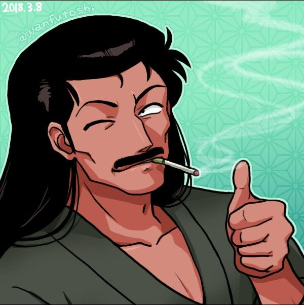

👨 Soun Tendo

Soun Tendo es el padre de Akane, Nabiki y Kasumi, y el dueño del dojo Tendo.
🌀 Personalidad
Es un hombre tradicional y emotivo que desea que su hija Akane se case con Ranma para asegurar el futuro del dojo.
❤️ Relaciones
- Genma Saotome: Amigo de la infancia y compañero de entrenamiento.
- Akane, Nabiki y Kasumi: Sus hijas a quienes adora.
🔎 Curiosidades
- Llora fácilmente ante cualquier problema.
- Rara vez pelea, pero es un maestro en artes marciales.
- Ranma le tiene mucho miedo cuando lo hace enojar.
🔊 Escucha su voz
🔙 Volver a la lista de personajes